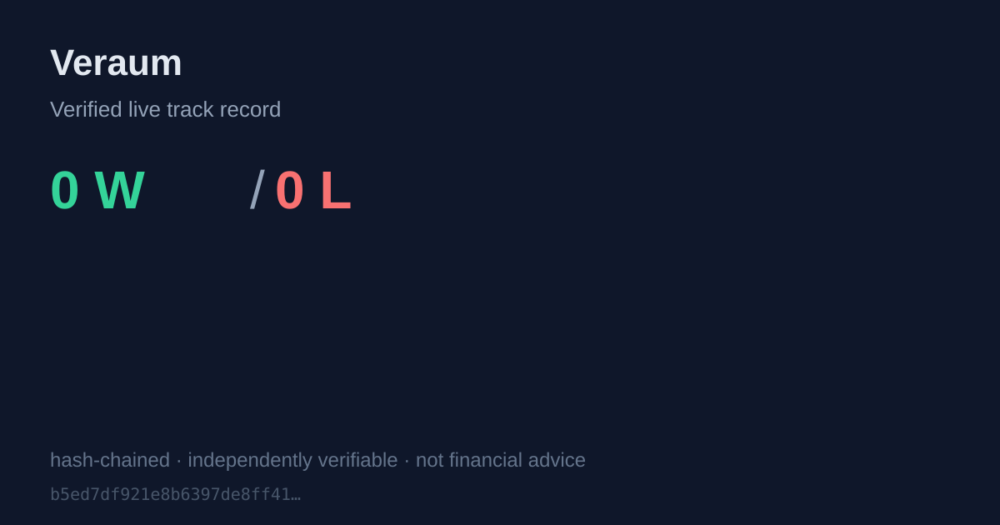

Veraum — a live, verifiable gold/silver/Nasdaq signal track record. Wins and losses, on-chain.
Share this proof card, or download proof-summary.svg
Every signal this engine emitted, wins and losses, bound into a SHA-256 hash
chain so nothing can be edited or deleted retroactively. Download
trackrecord.json and re-run
tools/track_record.py on the raw journal to verify
chain_head yourself.
| Instrument | Emitted | Wins | Losses | Open | Win rate (resolved) | Avg R (resolved) |
|---|---|---|---|---|---|---|
| NDX100 | 2 | 0 | 0 | 2 | 0.0% | +0.00R |
| XAUUSD | 1 | 0 | 0 | 1 | 0.0% | +0.00R |
| # | Instrument | Side | Entry | Stop | Target | Outcome | R | Hash |
|---|---|---|---|---|---|---|---|---|
| 1 | NDX100 | SHORT | $29,362.6 | $29,460.2 | $29,216.1 | OPEN | b5ed7df921e8… | |
| 2 | NDX100 | SHORT | $29,348.0 | $29,471.1 | $29,163.4 | OPEN | 5b10da7a2827… | |
| 3 | XAUUSD | LONG | $4,455.4 | $4,411.4 | $4,521.4 | OPEN | f0e486d2477a… |
Honesty policy: we publish losses as openly as wins. Outcomes resolve stop-first on same-bar conflicts; entry at signal close. This is decision-support data, not financial advice. We never guarantee profit.
{kind=link}